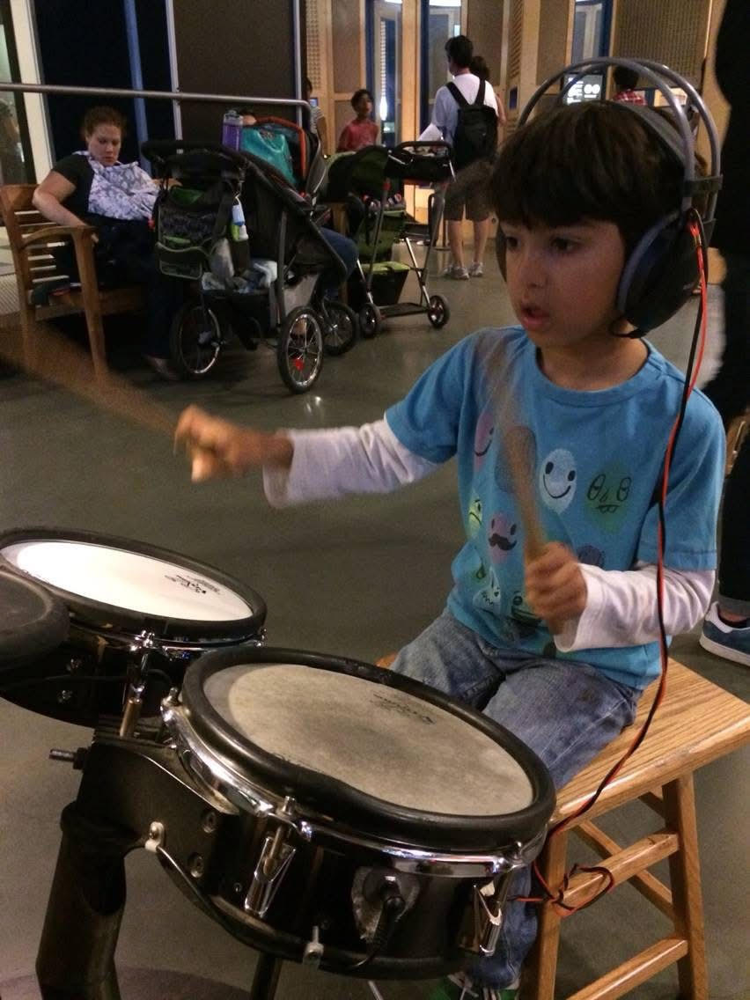
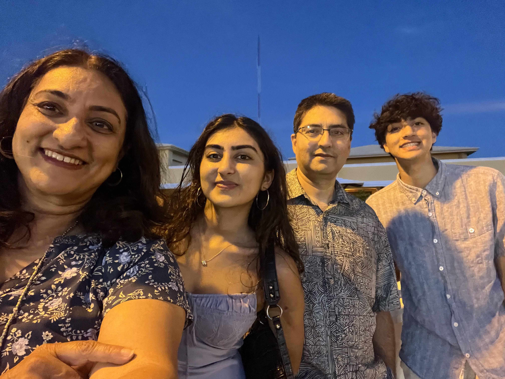
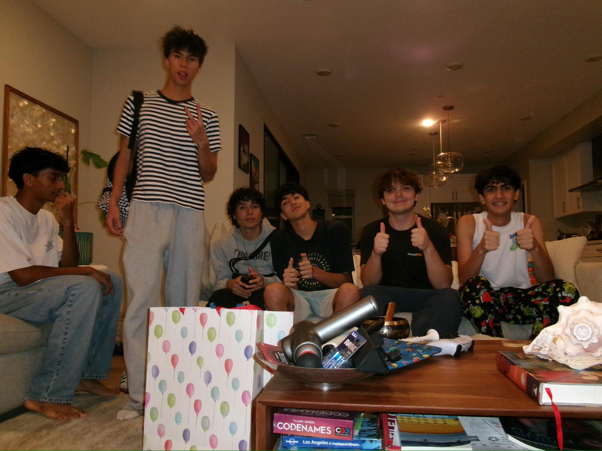

I’m Arjun Sejpal. I’m an 11th grader at Canyon Crest Academy. I have a sister, two cats, and a dog. For all my life, I’ve loved music. I started playing the Tabla when I was 7 years old and started to play the drums during the pandemic. Since then, I’ve picked up the guitar, piano, bass, ukulele, and also a ton of music production. I usually play music to decompress, but the art is rewarding nonetheless: I feel music is the universal language. I also love films. Making them, watching them, reading about them, the whole lot. I was born in Austin and moved here when I was 4, my parents are from India though. Coming to CCA was kind of a spontaneous decision on my end but probably one of the best decisions I’ve ever made. Aside from all the late nights studying and stressing over grades, CCA has shaped me into the type of person I want to be and has shown me interests I would have never guessed that I had.
My dream has always been to start my own company. When I was 10 I started my first online shop selling phone cases for my Fortnite YouTube channel. I went into debt after the first month, but it was a learning experience nonetheless. The main goal would be to use my expertise in music, film, and technical passion for tech (primarily electrical engineering) to create a product/service that can impact the world in a positive way.

When I’m older I want a huge music room in my house. If there’s one thing I will always splurge on, it’s music gear. Maybe one day I’ll have a guitar collection as big as Mr. Pollock’s (in my dreams). On a less selfish note, the biggest dream has always been to retire my parents. Giving back to the people who have always supported me is my biggest motivation. When I’m older, I also definitely want pets. As many as possible. A monkey would be cool, or a fox.
Coming to CCA, I was really worried I wouldn’t find my people, and to be honest, that fear didn’t falter throughout freshman year. Since all my old friends were at Torrey Pines, I pretty much had to create a new circle, and that was definitely tough until sophomore year. In freshman year, I became kinda-friends with a couple new people and I was still friends with two kids I had known since kindergarten. In sophomore year, those people and I converged and became the friend group I'm in today. It’s extremely refreshing to be able to be completely myself with all my friends and still be appreciated for it, and I’m sure the friends I have now will be ones I’ll stay in touch with forever. On the other hand, if you want to make friends like mine with fellow CCA alumni who can guide you through the high school process, Join my company, Strata CCA.